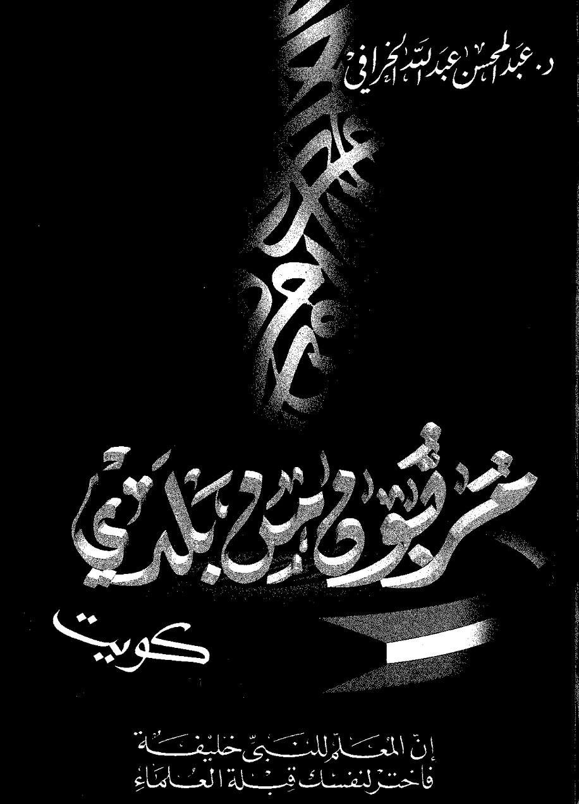
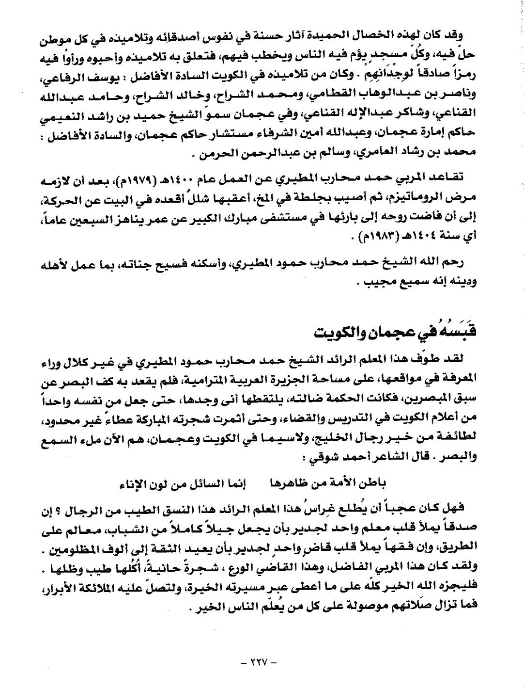

Book on Kuwait’s early teachers · Book pages, Dr Abdulmohsen Abdullah Al-Kharafi, Murabbun min Baladi
Murabbun min Baladi: the Al-Qatamis among Kuwait’s first pupils, teachers and mosques
What it is
Al-Kharafi’s biographies of Kuwait’s early teachers name the family many times. Naser bin Abdulwahab Al-Qatami (page 227), Sager Abdulwahab Al-Qatami (pages 251, 298 and 741) and Mariam Abdulaziz Al-Qatami (page 480) appear among the pupils, and Amna and Fatima, daughters of Abdulaziz Al-Qatami, among the schoolmates of Al-Mutawwa'a Mouza Al-Misbah (page 516). Her kuttab stood in Fereej Ibn Roumi «opposite the house of Abdulaziz Al-Qatami and Masjid Al-Qatami, which still stands» (page 517). Masjid Al-Qatami is listed among the old mosques (page 503), and one of the teachers became its imam in 1934 (page 615). Sulaiman Abdulaziz Al-Omar learned the nakhuda’s craft from Nakhuda Abdulwahab bin Eissa Al-Qatami (page 719). Page 974, quoting Saif Marzouq Al-Shamlan, records the pearl weights book of «Nakhuda Eissa Al-Qatami, the famous captain, who died in Muscat in 1929», printed in Bombay and very rare. Jassim Al-Qatami appears among the schoolmates of Khalid Abdulkarim (page 844), and Yacoub Al-Qatami among the classmates of Muhalhil Al-Mudhaf at Al-Mubarakiya School (page 930). The index lists Amna Abdulaziz, Fatima Abdulaziz and Eissa Al-Qatami, and Fudha Al-Qatami on page 1080, who is Fudha Yousef Al-Qatami, the only Fudha of the family. Page 518 names Lolwa Al-Qatami, identified by Noor Faisal Al-Qatami as Lolwa Abdulwahab, among the women teachers elected to the board of the Kuwait Teachers Society, and page 1161 lists «Faisal Al-Qatami and his brothers» among a teacher’s pupils, whom Noor believes to be Faisal Yousef Al-Qatami and his brothers.
Why it matters
Shows the family’s place in Kuwait’s early schooling, the location of the Al-Qatami house and mosque, and Eissa’s pearl weights book.
Page copies


Notes
Only the first pages are shown here. Family members who sign in can see all 19 pages.
Others named
Sources
Dr Abdulmohsen Abdullah Al-Kharafi, Murabbun min Baladi, pages 227, 251, 298, 480, 503, 516, 517, 518, 615, 719, 741, 844, 930, 974, 1161, 1364, 1385 and 1386
How this text was made: The year and publisher are not on the pages sent. Pages that name an Al-Qatami not yet identified are kept aside until the family confirms who they are.
Open in the interactive site